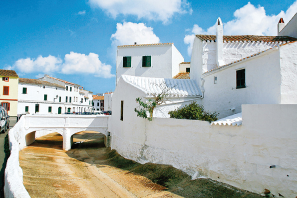

Menorca, una illa autèntica
Menorca és inimitable. Arraulida al nord de Balears, l'Illa ha sabut conservar l'encant que la natura li ha entregat. Sense estridències, sense excessos i amb equilibri, els seus 702 kilòmetres quadrats ofereixen al visitant innombrables regals per a tots els sentits. El mar, espargit de cales i platges gairebé paradisíaques, la converteix en un territori salat. La seva natura ofereix racons sorprenents, paratges on perdre's només per viure el moment. I la seva gent ha sabut guardar l'autenticitat d'un territori que s'ha adaptat al pas del temps sense perdre la seva identitat. Gelosos del seu tresor, els menorquins saben compartir-lo amb qui escull aquesta illa per desconnectar del món i viure experiències que no s'obliden.
És precisament aquesta feina de conservació de tants anys que li ha valgut a Menorca la distinció de Reserva de la Biosfera atorgada per la UNESCO, un fet que els menorquins tenen sempre molt present. Coneixen la importància del seu entorn, del seu paisatge, i el cuiden com si es tractés del seu propi fill.
Menorca és verda com els seus boscs, blanca com les seves cases, blau turquesa com el mar que la besa per tots els seus costats, negra com els cavalls i taronja com el seu formatge, i de mil colors com les seves gents. Menorca és autèntica, impossible de definir amb paraules. Se l'ha de descobrir i viure per tal de saber el que aquí se sent. Menorca és, simplement, Menorca.